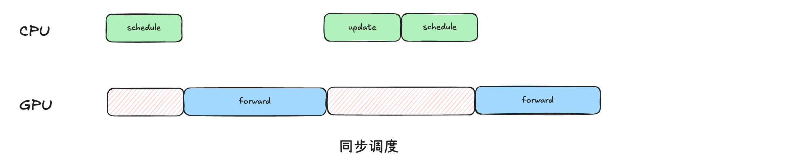
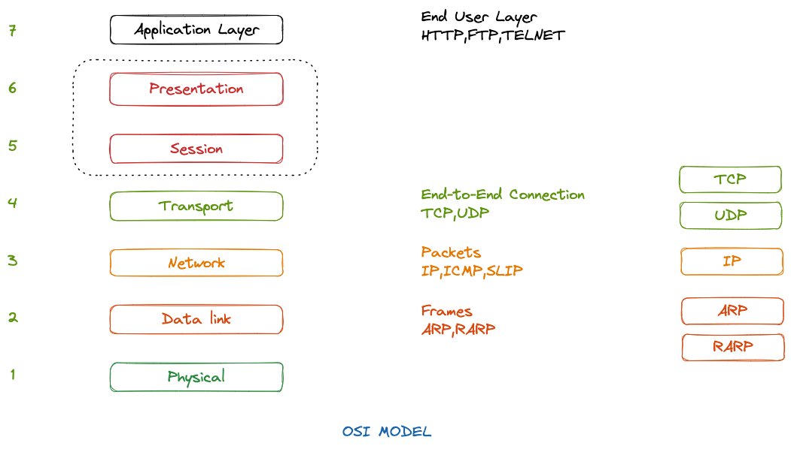
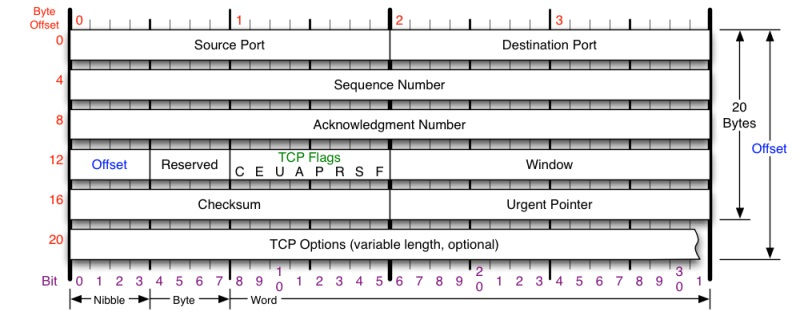
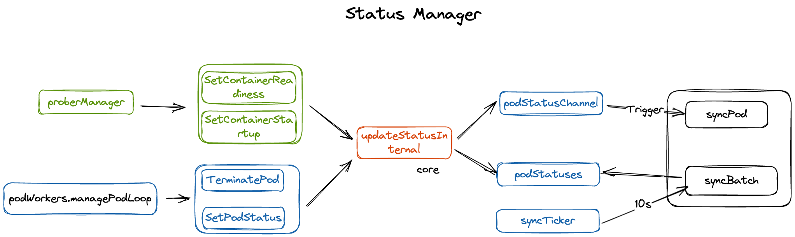

Recent 📎Posts
vLLM 分布式通信
class WorkerProc:
"""Wrapper that runs one Worker in a separate process."""
READY_STR = "READY"
rpc_broadcast_mq: MessageQueue | None
worker_response_mq: MessageQueue | None
@instrument(span_name="Worker init")
def __init__(...):
self.rank = rank
wrapper = WorkerWrapperBase(rpc_rank=local_rank, global_rank=rank)
...
wrapper.init_worker(all_kwargs)
self.worker = wrapper
...
self.worker.init_device()
if envs.VLLM_ELASTIC_EP_SCALE_UP_LAUNCH:
self.worker.elastic_ep_execute("load_model")
else:
self.worker.load_model()
。。
Worker init_device#
worker的init_device函数负责初始化设备的相关信息
- 根据当前worker的rank找到它所属的device，将它绑到指定的卡上，以及清空该device的显存，获取该device的显存大小等
- 对当前的worker做分布式环境初始化，也就是初始化当前worker的各种进程组（如模型并行、流水线并行、数据并行等）
- 构造当前worker的GPUModelRunner对象。维护着模型权重分片，还维护模型运行过程中所需要的一些数据结构，比如kv cache等，负责模型权重的加载(load_model)，以及实际的推理执行过程等逻辑。
@instrument(span_name="Init device")
def init_device(self):
if self.device_config.device_type == "cuda":
...
# Ray 会设置 NCCL_ASYNC_ERROR_HANDLING，但这个环境变量会导致 CUDA graph
# 构建时出现异常。CUDA graph 需要同步执行，而该变量会引入异步错误处理，
# 两者可能引起冲突。
os.environ.pop("NCCL_ASYNC_ERROR_HANDLING", None)
...
# - Ray/external_launcher 场景：这些分布式执行器自己管理GPU映射
# - 多节点场景(nnodes_within_dp > 1)：每个节点有独立的GPU集合，映射逻辑不同
# - Ray作为DP后端：Ray的resource pool处理GPU分配
if (
parallel_config.distributed_executor_backend
not in ("ray", "external_launcher")
and parallel_config.data_parallel_backend != "ray"
and parallel_config.nnodes_within_dp == 1 # 单节点场景
):
# local DP rank 表示在当前节点内的数据并行编号，而 global rank 可能
# 跨节点。在单节点场景下，GPU映射只看节点内的local rank。
dp_local_rank = self.parallel_config.data_parallel_rank_local
if dp_local_rank is None:
dp_local_rank = self.parallel_config.data_parallel_index
# DP副本 0 (dp_local_rank=0)
# original_local_rank=0 → GPU 0 + 0×2 = GPU 0
# original_local_rank=0 → GPU 0 + 1×2 = GPU 2 ← 偏移
# 偏移是为了计算出实际的rank信息，后续用来初始化device
self.local_rank += dp_local_rank * tp_pp_world_size
。。
self.device = torch.device(f"cuda:{self.local_rank}")
# PyTorch的设备API演进：从 torch.cuda.set_device() 到
# torch.accelerator.set_device_index()。 后续可以不用再手动指定，
torch.accelerator.set_device_index(self.device)
...
# 初始化分布式推理所需的所有环境，包括通信组信息
# 优先于内存快照处理逻辑，NCCL在初始化会分配内部缓存区，提前初始化用于保证显存计算的准确性
init_worker_distributed_environment(
self.vllm_config,
self.rank,
self.distributed_init_method,
self.local_rank,
current_platform.dist_backend,
)
# 1. gc.collect() 回收Python层的垃圾对象，释放可能的GPU引用
# 2. empty_cache() 释放PyTorch缓存的显存（包括NCCL缓冲区）
# 得到一个"干净"的显存状态，作为基准线
gc.collect()
torch.accelerator.empty_cache()
# 用于后续计算 KV cache 可用显存。
# init_snapshot 记录当前可用显存，request_memory 根据模型配置
# 计算需要预留的 KV cache 大小。
self.init_snapshot = init_snapshot = MemorySnapshot(device=self.device)
self.requested_memory = request_memory(init_snapshot, self.cache_config)
# 最后初始化modelrunner，需要依赖设备、分布式通信环境，同时通过快照可以计算出可以分配的kv cache显存大小
if self.use_v2_model_runner:
...
self.model_runner: GPUModelRunner = GPUModelRunnerV2( # type: ignore
self.vllm_config, self.device
)
else:
...
self.model_runner = GPUModelRunnerV1(self.vllm_config, self.device)
...
init_worker_distributed_environment#
负责初始化分布式推理所需的所有环境组件
TorchInductor Pattern Matcher
PyTorch FX 图#
PyTorch FX 是用于捕获、分析和转换 PyTorch 计算图。FX 图是一种静态表示，它记录了 PyTorch 代码的执行流程。用户通过将模型表示为FX图，可以更轻松地进行各种转换，例如图优化，量化，算子融合等。
FX 图的核心组件包括：
torch.fx.Graph：计算图的容器torch.fx.Node：图中的节点，表示计算操作，如函数调用、方法调用等torch.fx.GraphModule：由图构建的可执行模块
graph TD
subgraph FX_Graph
A["Placeholder Node"] --> B["CallFunction Node"]
B --> C["CallMethod Node"]
C --> D["Output Node"]
E["Module Node"] --> B
end
subgraph Components
F["torch.fx.Graph"] --> FX_Graph
G["torch.fx.Node"] --> A
G --> B
G --> C
G --> D
H["torch.fx.GraphModule"] --> F
end
style FX_Graph stroke:#333,stroke-width:2px
style Components stroke:#333,stroke-width:2px
FX Symbolic Tracing#
FX 图的生成过程称为"符号追踪"（Symbolic Tracing），主要步骤包括：
- 追踪：使用
torch.fx.symbolic_trace()对 PyTorch 函数或模块进行追踪 - 捕获：捕获函数执行过程中的所有操作，构建计算图
- 表示：将计算图表示为
Graph对象，其中包含一系列Node对象 - 转换：对捕获的图进行分析和转换
- 执行：将转换后的图包装为
GraphModule，可像普通 PyTorch 模块一样执行
import torch
# Simple module for demonstration
class MyModule(torch.nn.Module):
def __init__(self) -> None:
super().__init__()
self.param = torch.nn.Parameter(torch.rand(3, 4))
self.linear = torch.nn.Linear(4, 5)
def forward(self, x):
return self.linear(x + self.param).clamp(min=0.0, max=1.0)
module = MyModule()
from torch.fx import symbolic_trace
# Symbolic tracing frontend - captures the semantics of the module
symbolic_traced: torch.fx.GraphModule = symbolic_trace(module)
# High-level intermediate representation (IR) - Graph representation
# 由一个列表组成 代表函数输入、调用点（函数、方法、 或 torch.nn.Module 实例），以及返回值。
print(symbolic_traced.graph)
"""
graph():
%x : [num_users=1] = placeholder[target=x]
%param : [num_users=1] = get_attr[target=param]
%add : [num_users=1] = call_function[target=operator.add](args = (%x, %param), kwargs = {})
%linear : [num_users=1] = call_module[target=linear](args = (%add,), kwargs = {})
%clamp : [num_users=1] = call_method[target=clamp](args = (%linear,), kwargs = {min: 0.0, max: 1.0})
return clamp
"""
# Code generation - valid Python code
# 使 FX 成为 Python 到 Python（或 模块到模块）转换工具包。对于每个 Graph IR，我们可以 创建与图语义匹配的有效 Python 代码。
print(symbolic_traced.code)
"""
def forward(self, x):
param = self.param
add = x + param; x = param = None
linear = self.linear(add); add = None
clamp = linear.clamp(min = 0.0, max = 1.0); linear = None
return clamp
"""
FX 图的特点
vllm DP (Data Parallel)
DP基本概念#
DP在推理场景下的核心思想，在多个 GPU/节点上完整复制同一个模型权重，每个副本独立处理不同的请求或批次，从而近似线性提升吞吐。与训练中的 DP 需要梯度聚合不同，推理 DP 没有参数同步，通信负担主要来自调度、路由、指标与可选的缓存协同。
具体来说
- 每个 GPU/设备都拥有模型的完整副本
- 输入数据被分割成多个批次，通过负载均衡分配给不同设备
- 各设备独立进行前向推理
- 每个设备产生各自批次的输出结果
在DP部署方式下由于单卡的计算效率基本保持不变，因此吞吐提升近似是线性：理论上2 张卡就是 2 倍吞吐，4 张卡就是 4 倍，以此类推。
在大规模部署DP的时候，由于整体可支持的吞吐翻倍，API服务器需要面临成倍的压力，因此API服务器（Tokenize等预处理）可能会成为系统瓶颈。vllm可以使用--api-server-count命令行选项来扩展，最终暴露给用户的是一个Endpoint，在内部实现API服务器的扩展。
vllm 异步调度解析
在vllm初始版本中只有一个同步调度策略，在该策略下GPU资源会在调度过程中形成空泡，造成GPU资源的浪费。vllm在v0.10.0版本后提供异步调度策略，并且在后续的迭代中不断加入对于其他特性（例如异步场景下的投机解码）的支持。原始PR内容可查看#19970 Implement Async Scheduling ，当前代码分析基于main branch(735284ed)。
EngineCore处理处理Step逻辑：
def _process_engine_step(self) -> bool:
"""Called only when there are unfinished local requests."""
# Step the engine core.
outputs, model_executed = self.step_fn()
# Put EngineCoreOutputs into the output queue.
for output in outputs.items() if outputs else ():
self.output_queue.put_nowait(output)
# Post-step hook.
self.post_step(model_executed)
return model_executed
同步调度策略#
def step(self) -> tuple[dict[int, EngineCoreOutputs], bool]:
if not self.scheduler.has_requests():
return {}, False
scheduler_output = self.scheduler.schedule()
# 通过FutureWrapper进行异步包装（复用异步调度的部分逻辑， 在同步调度逻辑里面会等待结果返回）
#
future = self.model_executor.execute_model(scheduler_output, non_block=True)
# 用于支持结构化输出等
grammar_output = self.scheduler.get_grammar_bitmask(scheduler_output)
with self.log_error_detail(scheduler_output):
# 同步
model_output = future.result()
if model_output is None:
model_output = self.model_executor.sample_tokens(grammar_output)
# 处理整个过程中abort的请求
self._process_aborts_queue()
engine_core_outputs = self.scheduler.update_from_output(
scheduler_output, model_output
)
return engine_core_outputs, scheduler_output.total_num_scheduled_tokens > 0

同步调度步骤：Go 内存模型与分配机制
Go内存模型指定了一个goroutine中变量的读取条件，可以保证观察不同goroutine中对同一变量的写入产生的值。
虚拟内存#
虚拟内存技术是操作系统实现的一种高效的物理内存管理方式

- 虚拟内存通过页表映射到物理内存上，页表记录是否在物理内存上（有效位），以及物理内存页的地址
- 操作系统为每个进程提供了一个独立的页表，因此也就是一个独立的虚拟空间地址，多个虚拟页面可以映射到同一个共享物理页面上。
- 地址翻译：一个N元素的虚拟地址空间的元素和一个M元素的物理地址空间中元素之间的映射
- 虚拟内存：利用磁盘空间虚拟出一块逻辑内存，用作虚拟内存的磁盘空间被称为交换空间
- 操作系统内存管理中，一个重要概念虚拟内存:
- 扩大地址空间
- 内存保护
- 公平内存分配
- 当进程通信时，可采用虚存共享的方式实现
- 不需要在实际物理内存的连续空间，**可以利用碎片
- 虚拟内存的代价：
- 管理需要建立很多数据结构，占用额外的内存
- 虚拟地址到物理地址的转换，增加了指令的执行时间
- 页面的换入换出需要磁盘I/O
- 一页中只有部分数据，会浪费内存
Go内存模型#
参考tcmalloc设计，「修改由多个goroutine同时访问的数据的程序必须序列化这种访问。 要序列化访问，请使用channel操作或其他同步原语（sync和sync/atomic）保护数据。 别自作聪明。」
TCP/IP 协议的那些东西
TCP/IP 协议的那些东西#
本文主要是基于《TCP/IP 详解 卷1：协议》以及一些资料的一个学习总结。
概述#
网络中的整体传输流程可以简要总结为：数据首先会封装到TCP的Segment中，然后TCP的Segment封装到IP的Packet中，最后封装为以太网Ethernet的Frame，各个层解析自己的协议以及数据信息，最后将数据交给更高层的协议处理

- 应用层 ：为特定应用程序提供数据传输服务，例如 HTTP、DNS 等协议。数据单位为报文。
- 传输层 ：为进程提供通用数据传输服务。由于应用层协议很多，定义通用的传输层协议就可以支持不断增多的应用层协议。传输层包括两种协议：
- 传输控制协议 TCP，提供面向连接、可靠的数据传输服务，数据单位为报文段；
- 用户数据报协议 UDP，提供无连接、尽最大努力的数据传输服务，数据单位为用户数据报。TCP 主要提供完整性服务，UDP 主要提供及时性服务。
- 网络层 ：为主机提供数据传输服务。而传输层协议是为主机中的进程提供数据传输服务。网络层把传输层传递下来的报文段或者用户数据报封装成分组，IP协议
- 数据链路层 ：网络层针对的还是主机之间的数据传输服务，而主机之间可以有很多链路，链路层协议就是为同一链路的主机提供数据传输服务。数据链路层把网络层传下来的分组封装成帧。
- 物理层 ：考虑的是怎样在传输媒体上传输数据比特流，而不是指具体的传输媒体。物理层的作用是尽可能屏蔽传输媒体和通信手段的差异，使数据链路层感觉不到这些差异。
TCP头格式#

Kubelet StatusManager机制流程分析
Kubelet StatusManager机制流程分析#
主要功能将Pod状态信息同步到ApiServer，并不会主动监控Pod状态，提供接口供其他Manager调用，当其他组件需要改变 pod 的状态时会将 pod 的 status 信息发送到 statusManager 进行同步。主要使用方
probeManager，podWorkers

type manager struct {
kubeClient clientset.Interface
podManager kubepod.Manager
// Map from pod UID to sync status of the corresponding pod.
// statusManager 的 cache，保存 pod 与状态的对应关系；
podStatuses map[types.UID]versionedPodStatus
podStatusesLock sync.RWMutex
// 当其他组件调用 statusManager 更新 pod 状态时，会将 pod 的状态信息发送到podStatusesChannel 中；
podStatusChannel chan podStatusSyncRequest
// Map from (mirror) pod UID to latest status version successfully sent to the API server.
// apiStatusVersions must only be accessed from the sync thread.
apiStatusVersions map[kubetypes.MirrorPodUID]uint64
// 删除 pod 的接口
podDeletionSafety PodDeletionSafetyProvider
podStartupLatencyHelper PodStartupLatencyStateHelper
}
Start#
// 设置定时触发，时间为10s
syncTicker := time.NewTicker(syncPeriod).C
go wait.Forever(func() {
for {
select {
// 监听到一个pod状态变更的场景
case syncRequest := <-m.podStatusChannel:
klog.V(5).InfoS("Status Manager: syncing pod with status from podStatusChannel",
"podUID", syncRequest.podUID,
"statusVersion", syncRequest.status.version,
"status", syncRequest.status.status)
m.syncPod(syncRequest.podUID, syncRequest.status)
-> func (m *manager) needsUpdate(uid types.UID, status versionedPodStatus) bool {
// 1. 判断版本号信息
// 2. 获取pod
// 3. 判断是否处于删除状态
-> PodResourcesAreReclaimed // 检查 pod 在 node 上占用的所有资源是否已经被回收
}
// 触发定时器（定时器，syncPeriod 默认为 10s）
case <-syncTicker:
klog.V(5).InfoS("Status Manager: syncing batch")
// remove any entries in the status channel since the batch will handle them
for i := len(m.podStatusChannel); i > 0; i-- {
<-m.podStatusChannel
}
m.syncBatch()
}
}
}, 0)
syncPod#
- 基本流程
- 判断是否需要同步状态， 判断版本号信息是否已经增加，若不需要同步则继续检查 pod 是否处于删除状态
- 合并状态信息并更新记录到cache
- 如果可以删除pod，执行删除动作
func (m *manager) syncPod(uid types.UID, status versionedPodStatus) {
// 判断是否需要同步状态，以及是否处于删除状态
if !m.needsUpdate(uid, status) {
...
}
// 判断ResolvedPodUID是否一致，不一致则为删除后重建出来的pod，需要删除statusmanager保存的旧状态信息
if len(translatedUID) > 0 && translatedUID != kubetypes.ResolvedPodUID(uid) {
// 删除保存的状态信息，以及启动延时处理的状态
m.deletePodStatus(uid)
return
}
// 根据实际运行状态以及其他组件设置的状态合并出最终状态信息
mergedStatus := mergePodStatus(pod.Status, status.status, m.podDeletionSafety.PodCouldHaveRunningContainers(pod))
// 更新pod状态信息以及所记录状态
// 如果pod处理删除状态，删除pod以及记录信息
if m.canBeDeleted(pod, status.status) {
// 设置GracePeriodSecond为0，同时避免删除一个同名同命名空间的资源，传递Uid做precondition
...
err = m.kubeClient.CoreV1().Pods(pod.Namespace).Delete(context.TODO(), pod.Name, deleteOptions)
...
m.deletePodStatus(uid)
}
}
syncBatch#
定期将statusManager 缓存 podStatuses 中的数据同步到 apiserver，定时同步的时候会清理channel内容
Kubelet VolumeManager机制流程分析
Kubelet VolumeManager机制流程分析#
Kubelet Volume相关逻辑主要在VolumeManager模块

- Mount 阶段则由对应节点的 kubelet 中的 volume manager 处理。
- volume manager 获取 node.Status.VolumesAttached 属性值，发现 volume 已被标记为 attached, 就会进行 mount 操作
- k8s中涉及存储的组件主要有：attach/detach controller、pv controller、volume manager、volume plugins、scheduler。每个组件分工明确：
- attach/detach controller：负责对 volume 进行 attach/detach
- persistent volume controller：负责处理 pv/pvc 对象，包括 pv 的 provision/delete
- kubelet volume manager：主要负责对 volume 进行 mount/unmount
- volume plugins：包含 k8s 原生的和各厂商的的存储插件
挂载流程#
第一步是在准备 volume（宿主机目录），第二步才是真正的挂载操作。